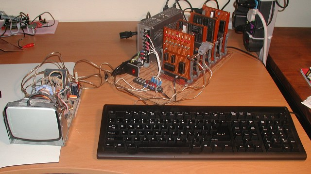

This is the last of several 1802 based systems I built between 1978 and 1983. This system like all "real" computers has a system bus and separate Front Panel, CPU, Memory, and Video cards. The original system used an Apple parallel keyboard that was damaged many house moves ago. Last year the system was modified to use a PS2 keyboard everything else is original and seems to work :-). The system uses Tiny Basic or a modified version of the original Popular Electronics monitor program.
